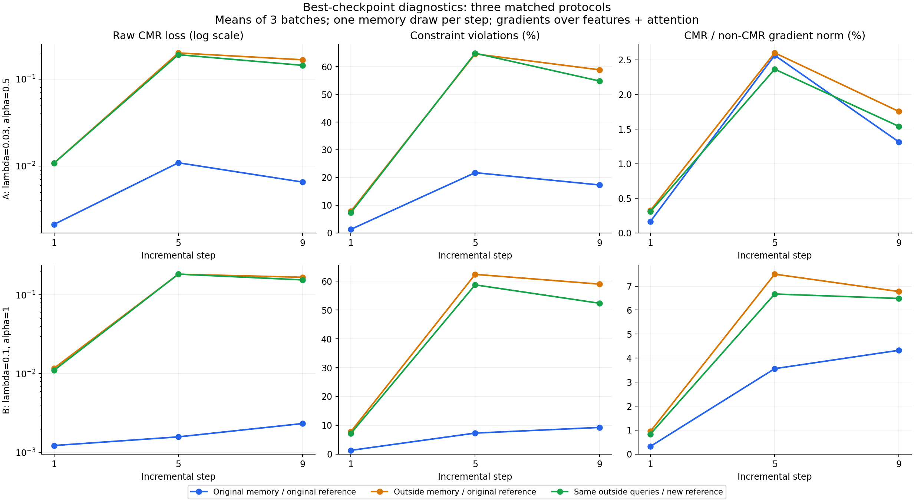
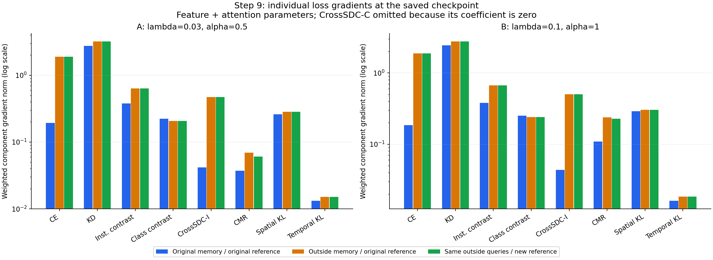

A：λ=0.03、α=0.5；B：λ=0.1、α=1。两组均为 hinge、tol=0.01、seed42，评估 step1、5、9 的最佳 checkpoint。每个阶段、每个协议测 3 个 batch，每批 128 个当前类样本和 128 个旧类样本。
主要发现：原 memory 上的重算接近历史记录；固定原参考体系后，memory 外样本的 CMR 已明显升高。重建原型与权重引起的均值变化相对小。B 对原 memory 的约束满足更充分，但在所测 memory 外样本上没有呈现同等幅度的保持收益。loss 的几十倍差异不对应梯度的几十倍差异。
两次运行和六个 checkpoint 状态均完成；2,100 个历史统计字段全部通过校验，最大绝对误差为 4.77e-07。本分析独立核对了 checkpoint、历史 CSV、元数据及测量源码哈希，逐样本 margin→hinge→batch CMR 的重建、各 loss 的总量、梯度分解，以及采样清单。未加载或更新模型参数。
两种设置使用完全相同的样本 ID。新 memory 与原 memory 不重合，三组每批的旧类别标签序列与当前类样本相同。第二、三组查询 ID 完全相同。第二组使用完整原参考原型，第三组对新 memory 内查询使用正确的 leave-one-out。这里“memory 外”是旧类 train 样本，不是测试集，也不等于历史上从未训练过的样本。
“原 memory”身份由采样流程重建并通过保存的 count、Reliability、Trust、权重指纹校验；没有伪称找到了训练时保存的原始 ID 日志。审计明细：audit.json。
| 设置 | 评估组 | raw CMR | 违反比例 % | CMR 梯度范数 | 非 CMR 合成梯度范数 | 梯度比 R % | 加入 CMR 后转角 ° |
|---|---|---|---|---|---|---|---|
| A | 原 memory | 0.006528 | 17.32 | 0.03719 | 2.8305 | 1.31 | 0.73 |
| A | memory 外／原参考 | 0.166550 | 58.85 | 0.06904 | 3.9508 | 1.75 | 0.97 |
| A | 相同样本／新参考 | 0.143724 | 54.82 | 0.06071 | 3.9508 | 1.54 | 0.87 |
| B | 原 memory | 0.002336 | 9.24 | 0.10943 | 2.5220 | 4.33 | 2.39 |
| B | memory 外／原参考 | 0.167305 | 58.98 | 0.23785 | 3.5202 | 6.77 | 3.64 |
| B | 相同样本／新参考 | 0.154890 | 52.34 | 0.22826 | 3.5202 | 6.49 | 3.57 |
raw CMR 去掉全局 λ，仍保留方向内的 Trust 类别权重。违反比例是两个方向的均值，按采样出现次数统计。梯度范围统一为特征层与注意力层，排除分类器；R = ‖λ∇L_CMR‖ / ‖∇Σ非CMR加权loss‖，不能视为可相加的更新百分比，也不等于 Adam 的实际更新比例。
固定原参考体系后，A 的 raw CMR 从 0.006528 升到 0.166550（25.51 倍），B 从 0.002336 升到 0.167305（71.63 倍）。违反比例分别从 17.32% / 9.24% 升到约 59%。这使“固定 replay 上满足的约束没有同等延伸到其他旧类样本”成为本批数据支持的现象，而不仅是旧探针混合改变样本、原型后的猜测。
对完全相同的 memory 外查询，改用新参考体系后，A 的 loss 下降 13.71%，B 下降 7.42%。这批采样中，更换参考体系不是几十倍差异的主要来源；不代表任何原型采样都不会产生较大影响。

| 设置 | step | memory 外／原 memory loss 倍数 | 新参考相对原参考 loss 变化 % | memory 外／原 memory CMR 梯度倍数 | 梯度比 R 的倍数 |
|---|---|---|---|---|---|
| A | 1 | 5.07 | -0.18 | 2.82 | 1.94 |
| A | 5 | 18.33 | -4.51 | 1.89 | 1.01 |
| A | 9 | 25.51 | -13.71 | 1.86 | 1.34 |
| B | 1 | 9.56 | -5.93 | 3.39 | 2.94 |
| B | 5 | 115.46 | 0.36 | 3.40 | 2.11 |
| B | 9 | 71.63 | -7.42 | 2.17 | 1.57 |
差距在 step5/9 更突出，伴随每类 memory 从 50 个减少到 10、5 个。但类别数、训练历史、teacher 和阶段难度也同时变化，不能仅凭这三个阶段把原因单独归为 memory 容量。
| 设置 | 评估组 | 不同查询数 | 旧类别覆盖数 | 去重后违反比例 % | 活跃样本平均违反幅度 | 有符号 margin 差的中位数 | violation P90 |
|---|---|---|---|---|---|---|---|
| A | 原 memory | 285 | 90 | 16.84 | 0.0378 | -0.0505 | 0.0189 |
| A | memory 外／原参考 | 291 | 90 | 58.08 | 0.2828 | 0.0591 | 0.4679 |
| A | 相同样本／新参考 | 291 | 90 | 54.64 | 0.2558 | 0.0320 | 0.4569 |
| B | 原 memory | 285 | 90 | 9.30 | 0.0248 | -0.0641 | 0.0000 |
| B | memory 外／原参考 | 291 | 90 | 58.59 | 0.2907 | 0.0485 | 0.5177 |
| B | 相同样本／新参考 | 291 | 90 | 52.06 | 0.2816 | 0.0189 | 0.4121 |
step9 的原 memory 与 memory 外评估分别覆盖 285、291 个不同样本，两边都覆盖 90 个旧类。去掉 batch 间重复查询后，memory 外仍有约 58%–59% 的方向约束违反；活跃 violation 的平均幅度约 0.28–0.29，而原 memory 为约 0.038 / 0.025。违反更普遍，也更严重。这些是一个固定采样集合上的描述，不是对整个旧类分布的置信区间。
| 设置 | step | 原 best epoch 的加权 CMR 均值 | 原 memory checkpoint 重算 | 重算／历史均值 |
|---|---|---|---|---|
| A | 1 | 0.0000659 | 0.0000639 | 0.970 |
| A | 5 | 0.0003254 | 0.0003265 | 1.003 |
| A | 9 | 0.0002139 | 0.0001958 | 0.916 |
| B | 1 | 0.0001047 | 0.0001229 | 1.174 |
| B | 5 | 0.0001434 | 0.0001583 | 1.103 |
| B | 9 | 0.0002186 | 0.0002336 | 1.068 |
原 memory 重算与原 best epoch 均值的比值约为 0.916–1.174。原记录是更新过程中的 batch 均值，checkpoint 是该 epoch 结束后的状态，二者无需相等。这里没有再出现 19 倍或 69 倍的系统差异，支持本次原参考恢复的有效性。
最佳 checkpoint 按验证准确率选择，并非每项 loss 的极值。step9 的原 memory 上，CMR 的加权梯度范数仍分别为 0.03719、0.10943。CMR loss 很小并没有让该项梯度归零；总目标驻点也不要求各分项梯度分别为零。
step9，原 memory 上 R 为 A 1.31%、B 4.33%；memory 外且固定参考时为 A 1.75%、B 6.77%。B 在原 memory 上的加权 CMR loss 与 A 接近，但其 CMR 梯度约为 A 的 2.94 倍。两个模型自身的 raw 梯度不同，因此不能把这个比值简单当作全局 λ 比值。
原 memory 换成 memory 外样本时，CMR loss 分别增大 25.51 / 71.63 倍，CMR 梯度仅增大 1.86 / 2.17 倍。hinge 在活跃区域的导数不随 violation 幅度线性增大；梯度还受激活样本数、特征 Jacobian 和方向抵消影响。与此同时非 CMR 合成梯度也增大，所以 R 的变化更小。

| 设置 | loss 项 | 加权 loss 均值 | 加权梯度范数均值 |
|---|---|---|---|
| A | attn_spatial | 0.002502 | 0.26144 |
| A | attn_temporal | 0.000093 | 0.01315 |
| A | ce | 0.024331 | 0.19424 |
| A | class_contrastive | 0.117282 | 0.22258 |
| A | cmr | 0.000196 | 0.03719 |
| A | cross_sdc_c | 0.000000 | 0.00000 |
| A | cross_sdc_i | 0.007298 | 0.04164 |
| A | instance_contrastive | 0.048430 | 0.37975 |
| A | kd | 0.042318 | 2.74649 |
| B | attn_spatial | 0.002381 | 0.28987 |
| B | attn_temporal | 0.000090 | 0.01600 |
| B | ce | 0.023494 | 0.18490 |
| B | class_contrastive | 0.116853 | 0.25119 |
| B | cmr | 0.000234 | 0.10943 |
| B | cross_sdc_c | 0.000000 | 0.00000 |
| B | cross_sdc_i | 0.007292 | 0.04350 |
| B | instance_contrastive | 0.045644 | 0.37839 |
| B | kd | 0.034141 | 2.43443 |
原 memory 上，类别对比的加权 loss 最大（约 0.117），但 KD 梯度范数最大（A 2.746、B 2.434）。因此不能按 loss 数值大小判断优化影响。CMR 在这些终点测量中是较小的附加梯度，却并非零作用。
在所有 CMR 梯度非零的被测 batch 中，CMR 与非 CMR 合成梯度的余弦为正。step9 的原 memory 上，CMR 与 CE 的平均余弦为 A −0.121、B −0.111，与类别对比也略为负；与 KD 则约为 +0.20。CMR 与合成方向同向，部分来自较大的 KD 梯度，并不意味着它和分类目标不存在局部冲突。
| 设置 | 评估组 | 与 CMR 比较的项 | 余弦均值 | 三个 batch 最小值 | 三个 batch 最大值 |
|---|---|---|---|---|---|
| A | 相同样本／新参考 | ce | 0.080 | 0.053 | 0.113 |
| A | 相同样本／新参考 | class_contrastive | -0.010 | -0.053 | 0.017 |
| A | 相同样本／新参考 | cross_sdc_i | 0.250 | 0.212 | 0.294 |
| A | 相同样本／新参考 | kd | 0.065 | 0.005 | 0.101 |
| A | memory 外／原参考 | ce | 0.192 | 0.167 | 0.239 |
| A | memory 外／原参考 | class_contrastive | -0.063 | -0.131 | -0.027 |
| A | memory 外／原参考 | cross_sdc_i | 0.264 | 0.222 | 0.305 |
| A | memory 外／原参考 | kd | 0.108 | 0.059 | 0.162 |
| A | 原 memory | ce | -0.121 | -0.199 | -0.051 |
| A | 原 memory | class_contrastive | -0.184 | -0.204 | -0.159 |
| A | 原 memory | cross_sdc_i | 0.265 | 0.193 | 0.338 |
| A | 原 memory | kd | 0.204 | 0.157 | 0.264 |
| B | 相同样本／新参考 | ce | 0.085 | 0.052 | 0.101 |
| B | 相同样本／新参考 | class_contrastive | 0.000 | -0.108 | 0.099 |
| B | 相同样本／新参考 | cross_sdc_i | 0.283 | 0.260 | 0.309 |
| B | 相同样本／新参考 | kd | 0.100 | 0.098 | 0.103 |
| B | memory 外／原参考 | ce | 0.202 | 0.178 | 0.214 |
| B | memory 外／原参考 | class_contrastive | -0.019 | -0.057 | 0.031 |
| B | memory 外／原参考 | cross_sdc_i | 0.250 | 0.223 | 0.293 |
| B | memory 外／原参考 | kd | 0.114 | 0.083 | 0.167 |
| B | 原 memory | ce | -0.111 | -0.135 | -0.094 |
| B | 原 memory | class_contrastive | -0.118 | -0.125 | -0.105 |
| B | 原 memory | cross_sdc_i | 0.235 | 0.212 | 0.274 |
| B | 原 memory | kd | 0.197 | 0.168 | 0.230 |
B 的原 memory raw CMR 比 A 低约 64%，但固定原参考的 memory 外 raw CMR 几乎相同（0.167305 对 0.166550）。本批结果更支持“较强设置在原 replay 上约束得更充分，收益没有同等延伸”，不足以支持“λ 更大所以整体保持更好”。λ 与 α 同时变化，后续阶段各自的 teacher 也不同，不能拆成 λ 的单独因果效应。
| 设置 | 三个训练 seed 的最终准确率均值 % | seed 标准差 pp |
|---|---|---|
| A | 40.31 | 0.36 |
| B | 39.61 | 0.75 |
历史三 seed 的最终分类准确率，A 为 40.31%±0.36pp，B 为 39.61%±0.75pp；当前 probe 的 seed42 分别为 39.90%、38.98%。因此若只在这两个既有设置中选后续重点，A 更适合作为性能参考，B 适合作为“原 memory 约束更强”的对照。三 seed 的标准差不是差异显著性的证明。
先利用已经保存的逐样本 margin、类别 Trust 和权重，按旧类别所属阶段、Trust 高低以及违反幅度拆分，检查强约束的收益是否集中在特定类别，以及哪类旧样本的损失最大。这一步不需要重新训练，也不需要再次加载 checkpoint。若后续需要更稳健的总体判断，应增加独立的 memory 外采样或参考库，而不是只在同一份 memory 内增加重叠 batch。
边界：这些结论对应最佳 checkpoint 的局部性质；不还原未保存 epoch 的梯度，不证明优化过程的累计因果效应，也不把 raw CMR 直接等同于分类准确率。原 memory 内查询使用 LOO、外部查询使用完整参考原型，是当前协议的规定；需要更严格隔离此项时，应另做统一目标原型策略的敏感性检查。